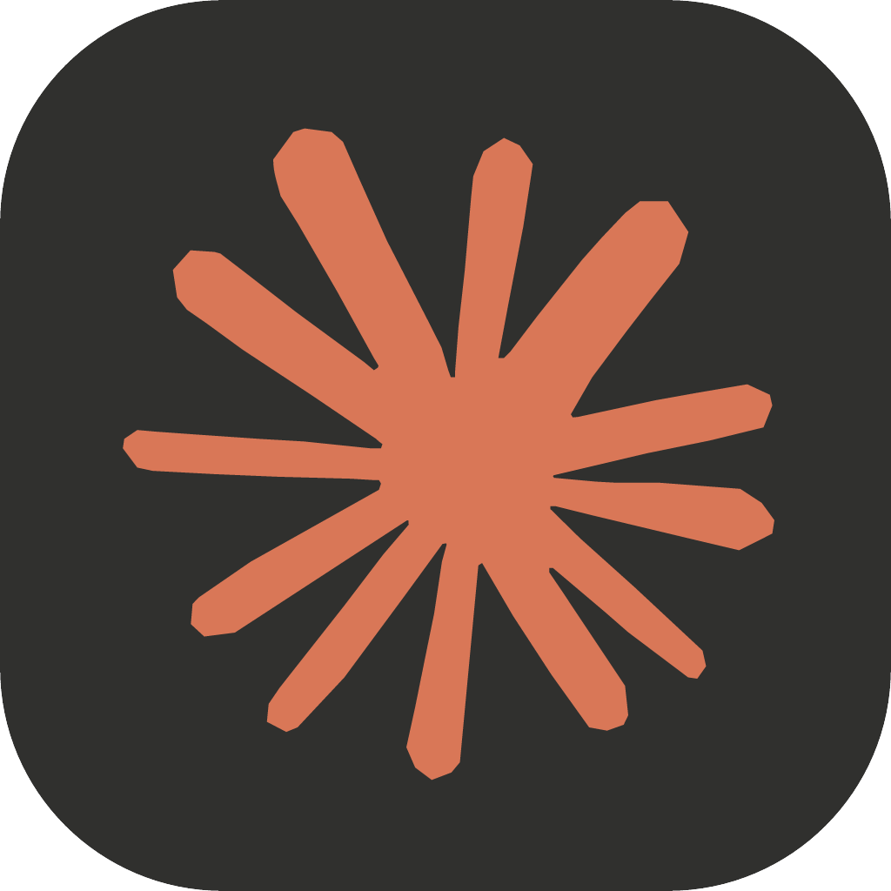
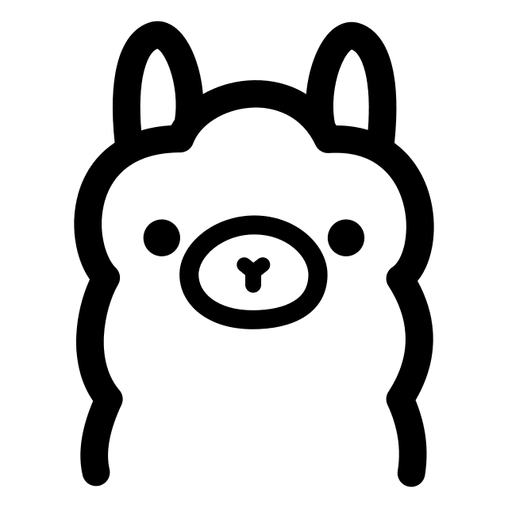

Every model.One connection.
Bring your AI coding tools and providers together. Polaris handles routing, fallback, and format translation — on your own infrastructure.
Open source. Self-hosted. Yours./v1.0.0/MIT
Models & routing
3 protocol familiesYour tools keep their API. Polaris finds the way.
/v1Credentials
Sample dataAccounts, API keys, and provider health in one place.

Claude PlatformAPI keyReady
OllamalocalhostReadyIllustrative preview. No live credentials or requests.
Activity
Sample dataFollow each request, from first attempt to response.
- Request received
POST /v1/responses - Rate limit detected
429 - Next available credential selected
- Response streamed to client
200
Illustrative preview. No live credentials or requests.
Your stack, already invited.
Connect 23 providers, from cloud accounts to models running on your own machine.
OAuth, API keys, or a local endpoint. Available models depend on your provider and account.
Less juggling. More building.
Let your tools do the coding. Let Polaris take care of the connection.
Explore the architectureKeep your workflow moving.
Smart fallback routes around rate limits, cooldowns, and exhausted credentials. Choose balanced, priority, weighted, latency, or cost-based routing.
Your keys. Your boundaries.
Give each client a scoped virtual API key with budgets, rate limits, expiry, and model allowlists. Add optional guardrails before requests leave the gateway.
Know where every request goes.
Inspect usage, request activity, and estimated costs in the console. Connect Prometheus metrics or optional Langfuse traces when you need more visibility.
Keep the context that matters.
Token-aware conversation cleanup preserves system instructions, tool-call relationships and recent messages. Configure optional guardrails and exact-response caching in AI Quality.
Make it your own.
Start with Docker Compose: one worker, one replica, and built-in SQLite. A local console for you or your trusted team.
Read the installation guideDocker Compose v2 · Linux amd64. Windows: Docker Desktop with WSL2. macOS requires manual verification; Apple Silicon uses amd64 emulation. No native ARM64 image.
Could not copy. Select the commands and copy them manually.
Back up your data before updating an existing installation.
Speaks your language.
15 languages. The same focused experience.
Polaris reviews English and Vietnamese semantically. Its 13 community console locales may fall back to English for missing messages.
One less thing between you and your next idea.
Build with the tools you love. Connect them with Polaris.